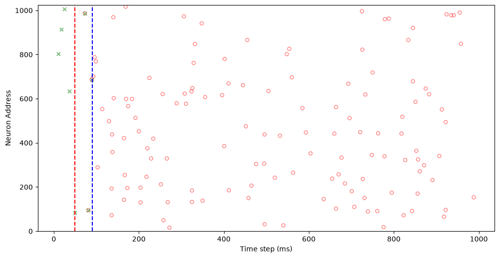
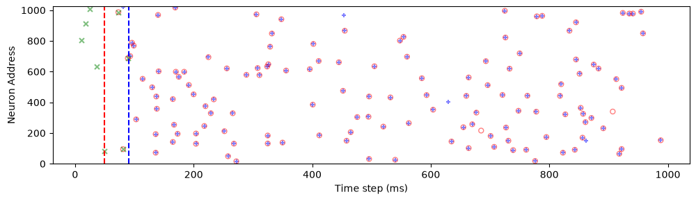
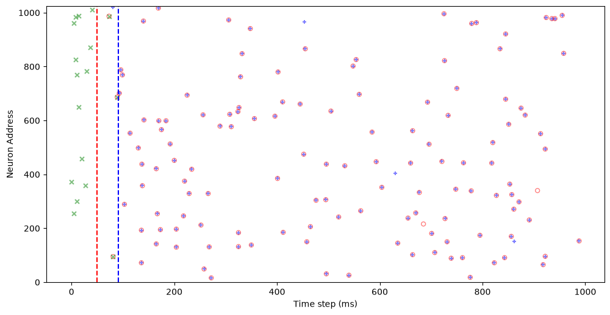
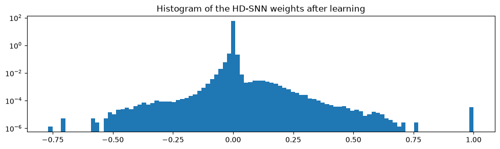
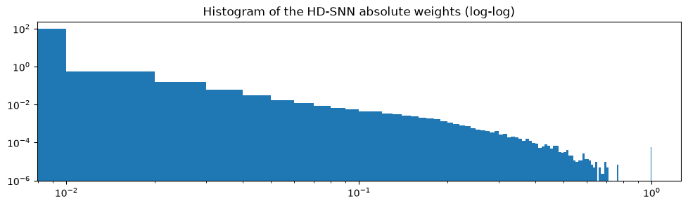

Learning a synthetic spike pattern¶
The core MNESIS experiment: a recurrent HD-SNN - one shared lin readout over the num_delay-wide spiking-history window plus one leaky integrate-and-fire (LIF) neuron per output unit, i.e. heterogeneous synaptic delays folded into delay-tap weights - must memorise a synthetic spiking motif by re-playing it from a brief trigger.
Notebook summary¶
Pipeline¶
Instantiate
Paramsand theStochasticSpikingPatterngenerator (cf. notebook 10).Analytic initialisation of
net.lin.weightby regressing the target on its own sliding 41-ms windows (update_weight->get_W_init, with LIF deconvolution and Moore-Penrose pseudo-inverse).Baseline retrieval: forward pass from the trigger, scored on the evoked window.
Supervised learning of the same readout (
learn_modeldriven by a F1-score loss).Post-learning evaluation + weight histograms (sparsity signature).
Main outputs¶
caches
../cached_data/<datetag>_init.pth(analytic init) and<datetag>_vanilla.pth(trained), each guarded by a.locksentinel against concurrent runs;figures
pattern.pdf,target_init.pdf,target.pdf(rasters); the weight histogramshistogram_log/histogram_loglogare display-only (figpath=None).
Notes¶
Baseline (analytic init) vs trained F1 are printed at each stage (~0.853 vs ~0.835 here): the analytic fit is already near-optimal on clean patterns; learning mainly adapts the readout to the stochastic realisations (
p_flipnoise).The training cell ships with a
if True: # HACK: FORCING RECOMPUTEswitch - see its note.
[ ]:
# Shared machinery from mnesis_boilerplate; the algorithm (HD_SNN) and the pattern
# generator (StochasticSpikingPattern) from mnesis_chains. Notebooks remain import-only.
from mnesis_boilerplate import torch, np, plt, splt, data_cache, figpath, RECOMPUTE, DEBUG, Params
from mnesis_boilerplate import printfig, get_scores
from mnesis_chains import StochasticSpikingPattern, HD_SNN
datetag = '2026-09-07'
Using device: mps
[2]:
if DEBUG > 1:
%whos
Parameters¶
Params (mnesis_boilerplate.py) is the authoritative hyperparameter source; this notebook runs on the production defaults (camera-ready datetag=2026-09-07):
group |
value |
meaning |
|---|---|---|
topology |
|
presynaptic inputs / neurons forming one SM |
topology |
|
width (ms) of the spiking-history (SM) window; odd for convolutions |
topology |
|
number of memorised motifs |
topology |
|
duration (ms) of each motif |
topology |
|
spontaneous-activity pads before and after the trigger |
input |
|
Bernoulli rate of the target (spikes/neuron/ms) |
input |
|
balanced-flip rate of each training realisation |
LIF |
|
decay / threshold, frozen ( |
learning |
|
optimiser / objective / regularisation |
learning |
|
cosine schedule |
The two prints below sanity-check the sparsity (~164 spikes per motif, ~6.7 per 41-ms window) and the membrane time constant tau = -1/ln(beta) ~ 2.8 ms.
[3]:
# The dataclass lives in mnesis_boilerplate.py so it can be imported directly
# by every notebook / module instead of being redefined here.
# https://docs.python.org/3/library/dataclasses.html?highlight=dataclass#module-dataclasses
[4]:
# Production defaults (camera-ready datetag); __post_init__ seeds torch/numpy with
# opt.seed so the whole notebook is reproducible.
opt = Params()
opt
[4]:
Params(datetag='2026-09-07', N_neuron=1024, num_delay=41, N_pattern=16, N_time=1000, N_pretime=50, p_A=0.00016, p_flip=0.01, seed=2026, lif_beta=0.7, lif_threshold=0.75, learn_beta=False, learn_threshold=False, do_pinv=True, do_deconv=True, num_epochs=256, num_warmup_epochs=16, base_lr=0.04, final_lr=0.0004, delta1=0.003, delta2=1e-05, dropout=0.6, alpha_surrogate=5.0, surrogate_name='FastSigmoid', loss_name='SpikeF1scoreLoss', reset_mechanism='zero', optimizer='adadelta', verbose=False, fig_width=30, fig_height=15, phi=1.61803, N_time_show=1000, N_neuron_show=1024, N_scan=36)
[5]:
print(f'Spikes in one target {opt.p_A * opt.N_neuron * opt.N_time:.1f}, in a SM window {opt.p_A * opt.N_neuron * opt.num_delay:.1f}')
Spikes in one target 163.8, in a SM window 6.7
[6]:
print(f'for a value {opt.lif_beta=:.1f}, the time constant is {- 1 / np.log(opt.lif_beta):.1f} steps')
for a value opt.lif_beta=0.7, the time constant is 2.8 steps
Analytic initialisation of the readout¶
HD_SNN.get_W_init (called via update_weight) computes a least-squares fit of the target onto its own history: each time bin is predicted from the flattened num_delay x N_neuron sliding window of preceding spikes - the heterogeneity of synaptic delays is made explicit as delay-tap columns of one weight matrix.
do_deconv=True: the target is first LIF-deconvolved (target - beta * roll(target, 1)) so the regression predicts the input current rather than the filtered spikes;do_pinv=True: Moore-Penrose pseudo-inverse (SVD on CPU);Falseswitches to a Hebbian cross-correlation rule.
The result is cached as <datetag>_init.pth with the standard file-locking protocol: a .lock sentinel is created before computing and removed after, so concurrent notebooks never read a half-written file; RECOMPUTE=True deletes data + lock to force a redo.
[ ]:
# Constructing HD_SNN also initialises the (frozen) pattern generator; the analytic
# initialisation is then cached/recovered under a .lock sentinel.
hd = HD_SNN(opt, StochasticSpikingPattern())
hd.net.to(hd.opt.device)
model_init_filename = data_cache / f"{hd.opt.datetag}_init.pth"
lock_init_filename = model_init_filename.with_suffix('.lock')
if RECOMPUTE:
model_init_filename.unlink(missing_ok=True) # FORCING RECOMPUTE
lock_init_filename.unlink(missing_ok=True) # FORCING RECOMPUTE
try:
model_state_dict = torch.load(model_init_filename, map_location=torch.device(hd.opt.device))
hd.net.load_state_dict(model_state_dict)
hd.net.eval()
lock_init_filename.unlink(missing_ok=True) # in case the lock file was not unlinked
print(f"Model weights loaded from {model_init_filename}") # Add a log message
except FileNotFoundError:
if not lock_init_filename.exists():
print(f"Init file not found: {model_init_filename}, inititializing the new model.")
lock_init_filename.touch(exist_ok=True)
##################
hd.update_weight()
##################
torch.save(hd.net.state_dict(), model_init_filename)
lock_init_filename.unlink(missing_ok=True)
else:
print(f"Model file is locked: {lock_init_filename}, passing.")
Model weights loaded from ../cached_data/2026-09-07_init.pth
[8]:
import time
if lock_init_filename.exists():
time.sleep(5)
Baseline retrieval from the analytic initialisation¶
Trigger protocol (get_input_spikes): N_pretime=50 ms of spontaneous Bernoulli(p_A) activity, then the first num_delay=41 ms of the target as the trigger; the remainder of the input raster is zero. Recurrent dynamics must re-emit the stored motif.
Evoked window - the comparison convention used by every retrieval notebook: spikes[:, :, N_pretime+num_delay : N_time+N_pretime] vs target[:, :, num_delay:] (both of length N_time - num_delay): a trigger ending at bin N_pretime+num_delay must evoke the target from its bin num_delay onwards.
[9]:
# target_full: target shifted right by N_pretime so its timeline matches input_spikes;
# forward_pass returns (current, membrane, spikes) over the padded time axis.
with torch.no_grad():
target = hd.pattern_object()
target_full = torch.nn.functional.pad(target, (opt.N_pretime, opt.N_pretime))
input_spikes = hd.get_input_spikes(target=target)
current, mem, spikes = hd.forward_pass(input_spikes)
current.min().item(), current.mean().item(), current.max().item()
[9]:
(-0.7318933010101318, 3.992266283603385e-05, 1.0967786312103271)
[10]:
# Score only the evoked window (aligned slices of length N_time - num_delay).
with torch.no_grad():
spikes_evoked = spikes[:, :, (hd.opt.N_pretime+hd.opt.num_delay):(hd.opt.N_time+hd.opt.N_pretime)]
target_evoked = target[:, :, hd.opt.num_delay:]
precision, recall, f1_score = get_scores(spikes_evoked, target_evoked)
print(f'precision = {precision:.3f}\t recall = {recall:.3f}\t f1_score = {f1_score:.3f} ')
precision = 0.899 recall = 0.811 f1_score = 0.853
Raster legend (trigger vs. target)¶
Open red o = the target, padded by N_pretime on both sides so it aligns with the input timeline; green x = the trigger (spontaneous pad + first num_delay ms of the target). Red/blue dashed verticals mark N_pretime (trigger onset) and N_pretime + num_delay (start of the evoked window).
[11]:
fig, ax = plt.subplots()
splt.raster(target_full[opt.i_pattern, :opt.N_neuron_show, :opt.N_time_show].T, ax, s=25, facecolor='none', edgecolor='red', marker='o', alpha=.5)
splt.raster(input_spikes[opt.i_pattern, :opt.N_neuron_show, :opt.N_time_show].T, ax, s=25, c="green", marker='x', alpha=.5)
ax.vlines([opt.N_pretime], 0, opt.N_neuron_show, 'r', ls='--')
ax.vlines([opt.N_pretime+opt.num_delay], 0, opt.N_neuron_show, 'b', ls='--')
ax.set_xlabel("Time step (ms)")
ax.set_ylabel("Neuron Address")
ax.set_ylim(-1., opt.N_neuron_show + 1.)
printfig(fig, 'pattern', fig_width=opt.fig_width, fig_height=opt.fig_height, figpath=figpath)
spikes.shape, spikes[opt.i_pattern, :opt.N_neuron_show, :opt.N_time_show].sum().item(), target[opt.i_pattern, :, :].sum().item()
File ../figures/pattern.pdf already exists. Skipping save.
File ../figures/pattern.png already exists. Skipping save.
File ../figures/pattern.svg already exists. Skipping save.
[11]:
(torch.Size([16, 1024, 1100]), 131.0, 140.0)

Raster legend (adds the evoked response)¶
Blue + = spikes re-emitted by the network in the evoked window. Blue aligning with red o is a correct retrieval; blue without red = false positives (precision loss), red without blue = misses (recall loss).
[12]:
fig, ax = plt.subplots()
splt.raster(spikes[opt.i_pattern, :opt.N_neuron_show, :opt.N_time_show].T, ax, s=25, c="blue", marker='+', alpha=.5)
splt.raster(target_full[opt.i_pattern, :opt.N_neuron_show, :opt.N_time_show].T, ax, s=25, facecolor='none', edgecolor='red', marker='o', alpha=.5)
splt.raster(input_spikes[opt.i_pattern, :opt.N_neuron_show, :opt.N_time_show].T, ax, s=25, c="green", marker='x', alpha=.5)
ax.vlines([opt.N_pretime], 0, opt.N_neuron_show, 'r', ls='--')
ax.vlines([opt.N_pretime+opt.num_delay], 0, opt.N_neuron_show, 'b', ls='--')
ax.set_xlabel("Time step (ms)")
ax.set_ylabel("Neuron Address")
ax.set_ylim(-1., opt.N_neuron_show + 1.)
printfig(fig, 'target_init', fig_width=opt.fig_width, fig_height=opt.fig_height/2, figpath=figpath)
spikes.shape, spikes[opt.i_pattern, :opt.N_neuron_show, :opt.N_time_show].sum().item(), target[opt.i_pattern, :, :].sum().item()
File ../figures/target_init.pdf already exists. Skipping save.
File ../figures/target_init.png already exists. Skipping save.
File ../figures/target_init.svg already exists. Skipping save.
[12]:
(torch.Size([16, 1024, 1100]), 131.0, 140.0)

Supervised learning of the readout¶
learn_model refines net.lin.weight (the only trainable tensor) with:
loss
SpikeF1scoreLoss = 1 - F1, computed only on the evoked window ([N_pretime+num_delay : N_time+N_pretime]vstarget[:, num_delay:]);optimiser adadelta (
rho = 1 - delta1 = 0.997) and a cosine LR schedule with a 16-epoch warmup, decayingbase_lr=40 mLRtofinal_lr=0.4 mLR;dropout 0.6 on the post-synaptic current, and a fresh stochastic realisation of the frozen pattern at every epoch (
pattern_object()) - data augmentation against memorising one exact realisation;per-epoch metrics on a second held-out realisation, logged every
num_epochs // 64epochs.
Same .pth + .lock caching as the init stage.
[ ]:
model_filename = data_cache / f"{hd.opt.datetag}_vanilla.pth"
lock_filename = model_filename.with_suffix('.lock')
if RECOMPUTE:
model_filename.unlink(missing_ok=True) # FORCING RECOMPUTE
lock_filename.unlink(missing_ok=True) # FORCING RECOMPUTE
try:
model_state_dict = torch.load(model_filename, map_location=torch.device(hd.opt.device))
hd.net.load_state_dict(model_state_dict)
lock_filename.unlink(missing_ok=True) # in case the lock file was not unlinked
print(f"Model weights loaded from {model_filename}") # Add a log message
except FileNotFoundError:
if not lock_filename.exists():
print(f"Model file not found: {model_filename}, training a new model.")
lock_filename.touch(exist_ok=True)
##################
hd.learn_model()
##################
torch.save(hd.net.state_dict(), model_filename)
lock_filename.unlink(missing_ok=True)
else:
print(f"Model file is locked: {lock_filename}, passing.")
hd.net.eval()
Model file not found: ../cached_data/2026-09-07_vanilla.pth, training a new model.
Train Epoch [000004/000256] | Loss = 1.583e-01 | precision = 0.880 | recall = 0.809 | f1_score = 0.842 |
Train Epoch [000008/000256] | Loss = 1.703e-01 | precision = 0.853 | recall = 0.808 | f1_score = 0.830 |
Train Epoch [000012/000256] | Loss = 1.728e-01 | precision = 0.886 | recall = 0.776 | f1_score = 0.827 |
Train Epoch [000016/000256] | Loss = 1.471e-01 | precision = 0.904 | recall = 0.808 | f1_score = 0.853 |
Train Epoch [000020/000256] | Loss = 1.500e-01 | precision = 0.898 | recall = 0.809 | f1_score = 0.850 |
Train Epoch [000024/000256] | Loss = 1.416e-01 | precision = 0.936 | recall = 0.793 | f1_score = 0.858 |
Train Epoch [000028/000256] | Loss = 2.138e-01 | precision = 0.829 | recall = 0.749 | f1_score = 0.786 |
Train Epoch [000032/000256] | Loss = 1.557e-01 | precision = 0.884 | recall = 0.808 | f1_score = 0.844 |
Train Epoch [000036/000256] | Loss = 1.875e-01 | precision = 0.853 | recall = 0.777 | f1_score = 0.812 |
Train Epoch [000040/000256] | Loss = 1.626e-01 | precision = 0.912 | recall = 0.778 | f1_score = 0.837 |
Train Epoch [000044/000256] | Loss = 1.466e-01 | precision = 0.909 | recall = 0.805 | f1_score = 0.853 |
Train Epoch [000048/000256] | Loss = 1.615e-01 | precision = 0.874 | recall = 0.808 | f1_score = 0.839 |
Train Epoch [000052/000256] | Loss = 1.978e-01 | precision = 0.827 | recall = 0.782 | f1_score = 0.802 |
Train Epoch [000056/000256] | Loss = 1.811e-01 | precision = 0.869 | recall = 0.780 | f1_score = 0.819 |
Train Epoch [000060/000256] | Loss = 1.882e-01 | precision = 0.869 | recall = 0.764 | f1_score = 0.812 |
Train Epoch [000064/000256] | Loss = 1.509e-01 | precision = 0.901 | recall = 0.804 | f1_score = 0.849 |
Train Epoch [000068/000256] | Loss = 1.588e-01 | precision = 0.896 | recall = 0.793 | f1_score = 0.841 |
Train Epoch [000072/000256] | Loss = 1.578e-01 | precision = 0.892 | recall = 0.798 | f1_score = 0.842 |
Train Epoch [000076/000256] | Loss = 1.676e-01 | precision = 0.897 | recall = 0.778 | f1_score = 0.832 |
Train Epoch [000080/000256] | Loss = 1.465e-01 | precision = 0.942 | recall = 0.781 | f1_score = 0.854 |
Train Epoch [000084/000256] | Loss = 1.564e-01 | precision = 0.883 | recall = 0.808 | f1_score = 0.844 |
Train Epoch [000088/000256] | Loss = 1.746e-01 | precision = 0.882 | recall = 0.778 | f1_score = 0.825 |
Train Epoch [000092/000256] | Loss = 1.513e-01 | precision = 0.916 | recall = 0.792 | f1_score = 0.849 |
Train Epoch [000096/000256] | Loss = 1.444e-01 | precision = 0.910 | recall = 0.807 | f1_score = 0.856 |
Train Epoch [000100/000256] | Loss = 1.561e-01 | precision = 0.884 | recall = 0.808 | f1_score = 0.844 |
Train Epoch [000104/000256] | Loss = 1.660e-01 | precision = 0.877 | recall = 0.795 | f1_score = 0.834 |
Train Epoch [000108/000256] | Loss = 1.713e-01 | precision = 0.857 | recall = 0.803 | f1_score = 0.829 |
Train Epoch [000112/000256] | Loss = 1.819e-01 | precision = 0.876 | recall = 0.769 | f1_score = 0.818 |
Train Epoch [000116/000256] | Loss = 1.810e-01 | precision = 0.875 | recall = 0.770 | f1_score = 0.819 |
Train Epoch [000120/000256] | Loss = 1.497e-01 | precision = 0.897 | recall = 0.808 | f1_score = 0.850 |
Train Epoch [000124/000256] | Loss = 1.659e-01 | precision = 0.881 | recall = 0.793 | f1_score = 0.834 |
Train Epoch [000128/000256] | Loss = 1.518e-01 | precision = 0.892 | recall = 0.810 | f1_score = 0.848 |
Train Epoch [000132/000256] | Loss = 1.724e-01 | precision = 0.868 | recall = 0.794 | f1_score = 0.828 |
Train Epoch [000136/000256] | Loss = 1.647e-01 | precision = 0.905 | recall = 0.778 | f1_score = 0.835 |
Train Epoch [000140/000256] | Loss = 1.753e-01 | precision = 0.878 | recall = 0.779 | f1_score = 0.825 |
Train Epoch [000144/000256] | Loss = 1.649e-01 | precision = 0.881 | recall = 0.794 | f1_score = 0.835 |
Train Epoch [000148/000256] | Loss = 1.497e-01 | precision = 0.915 | recall = 0.795 | f1_score = 0.850 |
Train Epoch [000152/000256] | Loss = 1.475e-01 | precision = 0.919 | recall = 0.796 | f1_score = 0.853 |
Train Epoch [000156/000256] | Loss = 1.637e-01 | precision = 0.882 | recall = 0.795 | f1_score = 0.836 |
Train Epoch [000160/000256] | Loss = 1.737e-01 | precision = 0.872 | recall = 0.787 | f1_score = 0.826 |
Train Epoch [000164/000256] | Loss = 1.442e-01 | precision = 0.925 | recall = 0.797 | f1_score = 0.856 |
Train Epoch [000168/000256] | Loss = 1.883e-01 | precision = 0.859 | recall = 0.771 | f1_score = 0.812 |
Train Epoch [000172/000256] | Loss = 1.652e-01 | precision = 0.904 | recall = 0.777 | f1_score = 0.835 |
Train Epoch [000176/000256] | Loss = 1.658e-01 | precision = 0.862 | recall = 0.808 | f1_score = 0.834 |
Train Epoch [000180/000256] | Loss = 1.348e-01 | precision = 0.933 | recall = 0.807 | f1_score = 0.865 |
Train Epoch [000184/000256] | Loss = 1.684e-01 | precision = 0.871 | recall = 0.797 | f1_score = 0.832 |
Train Epoch [000188/000256] | Loss = 1.576e-01 | precision = 0.900 | recall = 0.792 | f1_score = 0.842 |
Train Epoch [000192/000256] | Loss = 1.575e-01 | precision = 0.881 | recall = 0.808 | f1_score = 0.843 |
Train Epoch [000196/000256] | Loss = 1.638e-01 | precision = 0.868 | recall = 0.807 | f1_score = 0.836 |
Train Epoch [000200/000256] | Loss = 1.549e-01 | precision = 0.888 | recall = 0.807 | f1_score = 0.845 |
Train Epoch [000204/000256] | Loss = 1.629e-01 | precision = 0.871 | recall = 0.808 | f1_score = 0.837 |
Train Epoch [000208/000256] | Loss = 1.758e-01 | precision = 0.880 | recall = 0.776 | f1_score = 0.824 |
Train Epoch [000212/000256] | Loss = 1.565e-01 | precision = 0.902 | recall = 0.792 | f1_score = 0.844 |
Train Epoch [000216/000256] | Loss = 1.686e-01 | precision = 0.876 | recall = 0.792 | f1_score = 0.831 |
Train Epoch [000220/000256] | Loss = 1.501e-01 | precision = 0.920 | recall = 0.791 | f1_score = 0.850 |
Train Epoch [000224/000256] | Loss = 1.507e-01 | precision = 0.916 | recall = 0.791 | f1_score = 0.849 |
Train Epoch [000228/000256] | Loss = 1.788e-01 | precision = 0.887 | recall = 0.764 | f1_score = 0.821 |
Train Epoch [000232/000256] | Loss = 1.672e-01 | precision = 0.858 | recall = 0.810 | f1_score = 0.833 |
Train Epoch [000236/000256] | Loss = 1.578e-01 | precision = 0.895 | recall = 0.795 | f1_score = 0.842 |
Train Epoch [000240/000256] | Loss = 1.476e-01 | precision = 0.902 | recall = 0.808 | f1_score = 0.852 |
Train Epoch [000244/000256] | Loss = 1.551e-01 | precision = 0.890 | recall = 0.806 | f1_score = 0.845 |
Train Epoch [000248/000256] | Loss = 1.607e-01 | precision = 0.873 | recall = 0.809 | f1_score = 0.839 |
Train Epoch [000252/000256] | Loss = 1.504e-01 | precision = 0.907 | recall = 0.800 | f1_score = 0.850 |
Train Epoch [000256/000256] | Loss = 1.455e-01 | precision = 0.921 | recall = 0.797 | f1_score = 0.855 |
Sequential(
(lin): Linear(in_features=41984, out_features=1024, bias=False)
(dropout): Dropout(p=0.6, inplace=False)
(lif): Leaky()
)
[14]:
import time
if lock_filename.exists():
time.sleep(5)
Post-learning evaluation¶
Same trigger protocol and evoked-window slices as the baseline, on a fresh stochastic realisation: compare with the analytic-init score (~0.85 f1) to quantify what supervised refinement adds. eval() turns dropout off, so the pass is deterministic.
[15]:
with torch.no_grad():
target_full = torch.nn.functional.pad(target, (opt.N_pretime, opt.N_pretime))
input_spikes = hd.get_input_spikes(target=target)
_, _, spikes = hd.forward_pass(input_spikes)
spikes_evoked = spikes[:, :, (hd.opt.N_pretime+hd.opt.num_delay):(hd.opt.N_time+hd.opt.N_pretime)]
target_evoked = target[:, :, hd.opt.num_delay:]
precision, recall, f1_score = get_scores(spikes_evoked, target_evoked)
print(f'precision = {precision:.3f}\t recall = {recall:.3f}\t f1_score = {f1_score:.3f} ')
precision = 0.861 recall = 0.811 f1_score = 0.835
[16]:
fig, ax = plt.subplots()
splt.raster(spikes[opt.i_pattern, :opt.N_neuron_show, :opt.N_time_show].T, ax, s=25, c="blue", marker='+', alpha=.5)
splt.raster(target_full[opt.i_pattern, :opt.N_neuron_show, :opt.N_time_show].T, ax, s=25, facecolor='none', edgecolor='red', marker='o', alpha=.5)
splt.raster(input_spikes[opt.i_pattern, :opt.N_neuron_show, :opt.N_time_show].T, ax, s=25, c="green", marker='x', alpha=.5)
ax.vlines([opt.N_pretime], 0, opt.N_neuron_show, 'r', ls='--')
ax.vlines([opt.N_pretime+opt.num_delay], 0, opt.N_neuron_show, 'b', ls='--')
ax.set_xlabel("Time step (ms)")
ax.set_ylabel("Neuron Address")
ax.set_ylim(-1., opt.N_neuron_show + 1.)
# printfig(fig, 'target', fig_width=opt.fig_width, fig_height=opt.fig_height//2, figpath=figpath)
printfig(fig, 'target', fig_width=opt.fig_width, fig_height=opt.fig_height, figpath=figpath)
spikes.shape, spikes[opt.i_pattern, :, :].sum().item(), target[opt.i_pattern, :, :].sum().item()
File ../figures/target.pdf already exists. Skipping save.
File ../figures/target.png already exists. Skipping save.
File ../figures/target.svg already exists. Skipping save.
[16]:
(torch.Size([16, 1024, 1100]), 146.0, 140.0)

Weight histograms: sparsity signature¶
100-bin density histograms of the trained net.lin.weight (41984 x 1024 = one delay tap x one post-synaptic neuron), on log (and log-log) scales. A tall peak near zero with heavy tails = a sparse code: few strong, selective synapses carry each memory.
[17]:
# hd.net.lin.bias.cpu().detach().numpy()
fig, ax = plt.subplots()
ax.hist(hd.net.lin.weight.cpu().detach().numpy().ravel(), bins=100, density=True) # pyright: ignore[reportCallIssue, reportAttributeAccessIssue]
ax.set_title(f"Histogram of the HD-SNN weights after learning")
ax.set_yscale('log')
printfig(fig, 'histogram_log', fig_width=opt.fig_width, fig_height=opt.fig_height/2, figpath=None)

[18]:
# hd.net.lin.bias.cpu().detach().numpy()
fig, ax = plt.subplots()
ax.hist(np.abs(hd.net.lin.weight.cpu().detach().numpy().ravel()), bins=100, density=True) # pyright: ignore[reportCallIssue, reportAttributeAccessIssue]
ax.set_title(f"Histogram of the HD-SNN absolute weights (log-log)")
ax.set_yscale('log')
ax.set_xscale('log')
printfig(fig, 'histogram_loglog', fig_width=opt.fig_width, fig_height=opt.fig_height/2, figpath=None)
